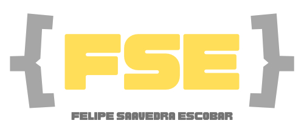

Inicio
Portafolio
Educación
Experiencia
Footer
EXPERIENCIA LABORAL
Walmart Chile
Jefe de proyectos Senior 09/2019 - 10/2022
Lidera como Product Owner de producto ágil, aplicación móvil de seguimiento de pedidos desde CD a tiendas.
Lidera como Product Owner de producto ágil, aplicación web de pedidos de emergencia para tiendas.
Implementa aplicación web para pickeo de productos en centro de distribución
Account manager Senior 08/2018 - 08/2019
Implementa integración entre sistemas de logística inversa y SII para emisión de guías de despacho.
Lidera portafolio SAP del área de transportes.
Jefe de proyectos eCommerce 02/2017 - 07/2018
Implementa módulo de visualización de imágenes de productos en lider.cl.
Implementa módulo de envío de correos de respuesta a clientes desde lider.cl.
Integració sistema de descuento para colaboradores de la compañia
Jefe de proyectos SAP 07/2013 - 02/2017
Implementa módulo SAP TR para las solicitudes de viajes corporativos.
Implementa módulos de finiquitos y vacaciones en SAP HR.
Analista 03/2010 - 06/2013
Implementa portal web para información de pagos a proveedores de Walmart.
Implementa ambiente web de SAP (WAS) a nivel de infraestructura, basis y funcional.
Analista desarrollador (Externo) 03/2009 - 02/2010
Desarrolla aplicación web para ingreso de forecast de ventas para comisiones de cajeros.
Helpnet
Jefe de Proyectos 02/2006 - 12/2008
Lidera proyectos en clientes externos como Dimacofi, Sodimac, Sitrans.